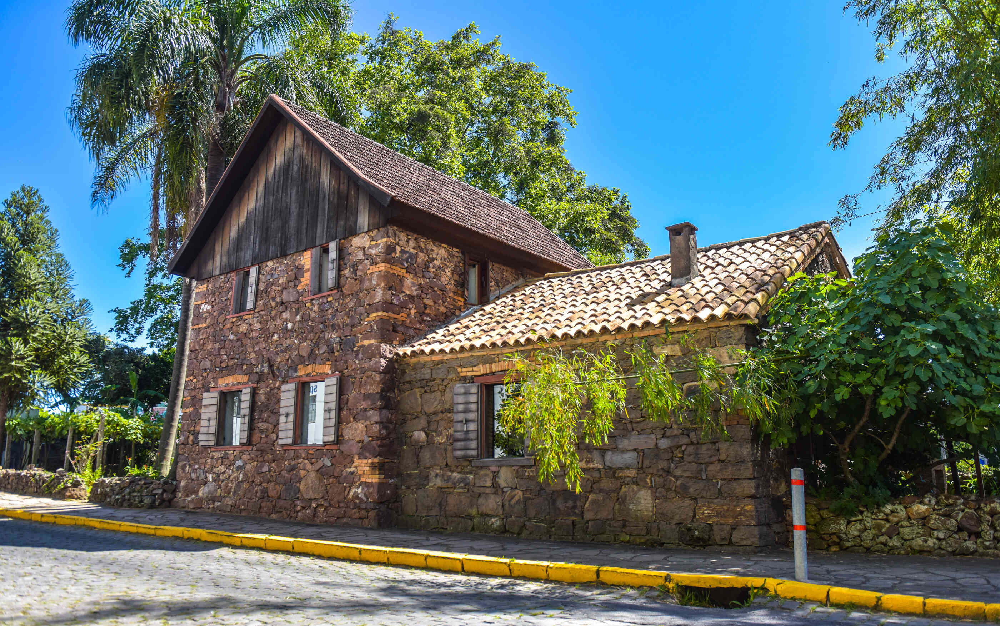
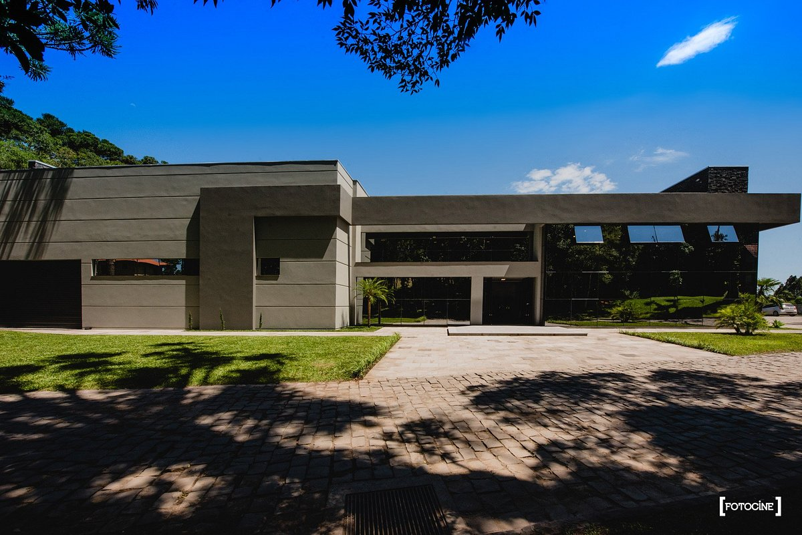
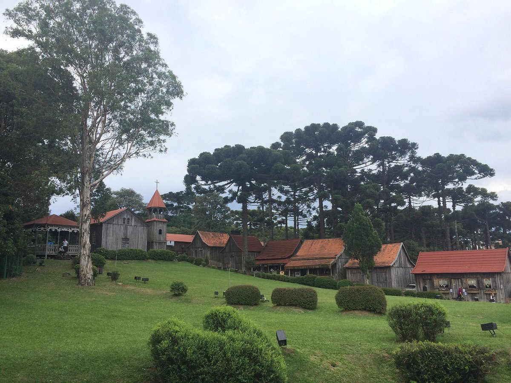

Casa de Pedra

O Museu de Ambiência Casa de Pedra é um local de inúmeras memórias. Suas pedras simples,
assentadas e
rejuntadas com barro, as aberturas em madeira de pinho, o amplo parreiral que ostenta
próximo a si, se
entrelaçam com a história local e lembram de um tempo em que, ao final do século XIX, uma
das primeiras
dificuldades a ser superada pelos imigrantes seria a edificação da própria moradia.
Vinícola Quinta Don Bonifácio

Vinícola de Caxias do Sul, produtora de vinhos e espumantes especiais. . A natureza move os
nossos dias. .
Saia da rotina, faça a visitação na vinícola com degustação e relaxe no Quintal da Quinta, nosso
jardim de
vinhos que funciona aos sábados!
Réplica de Caxias do Sul - 1885

A festa da uva, disponibiliza inúmeras atrações, mas um dos locais mais populares entre os
turistas e
visitantes está uma Réplica da primeira rua da cidade de Caxias do Sul de 1885, um conjunto de
23 casas de
madeira, que fica abrigada na área dos pavilhões da festa da uva, localizada na entrada do
Parque de
Exposições, na rua Ludovico Cavinato em Caxias do Sul no interior do R.S.